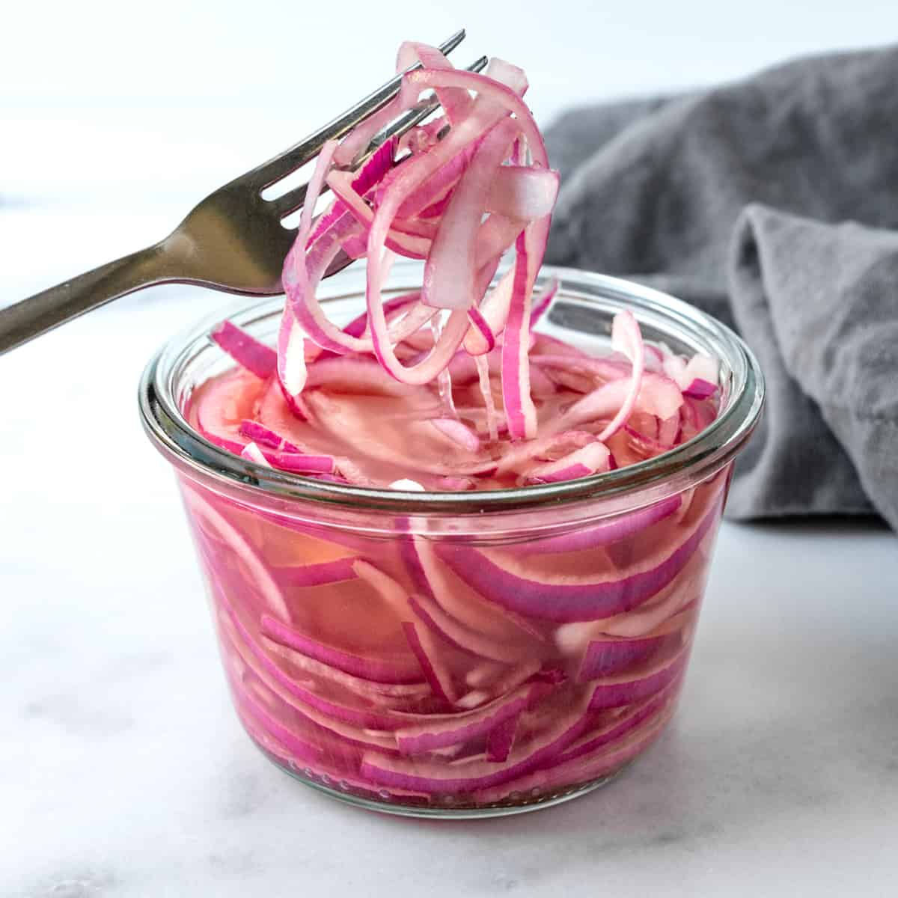

Cebolla morada en vinagre
Atrás

Ingredientes
- 1 a 3 cebollas moradas
- 500 ml de Vinagre blanco
- Agua
- Sal
Pasos
- Pelar y cortar la cebolla morada en rodajas finas.
- En una olla, hervir partes iguales de agua y vinagre blanco.
- Agregar sal al gusto.
- Colocar las rodajas de cebolla en un frasco de vidrio limpio.
- Verter la mezcla de vinagre y agua caliente sobre las cebollas.
- Cerrar el frasco y dejar enfriar a temperatura ambiente.
- Refrigerar durante al menos 1 hora antes de consumir.